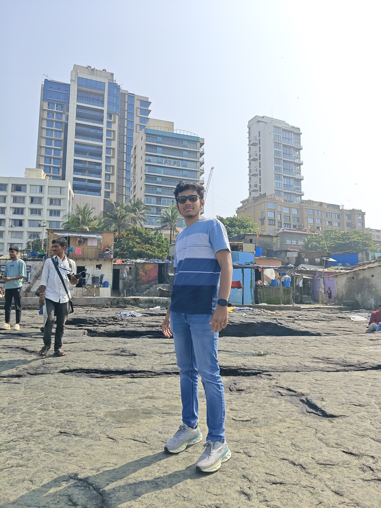
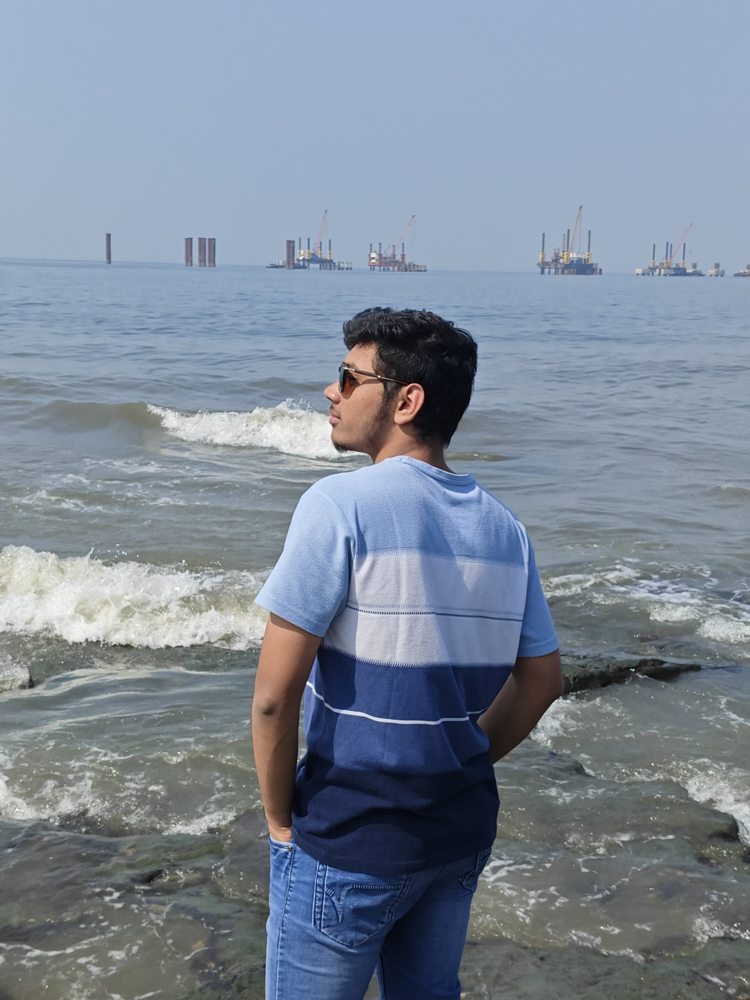
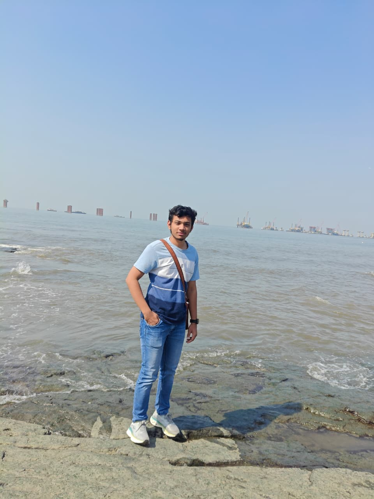

Welcome to my personal portfolio website. I am Mohammed Maaz Pathan, currently pursuing Bachelor of Science in Information Technology with Dual Specialization in Cyber Security at GLS University. I enjoy learning Java, Python, Web Development, SQL, Networking and Cyber Security. My goal is to become a Cyber Security Engineer and build secure applications for organizations.


